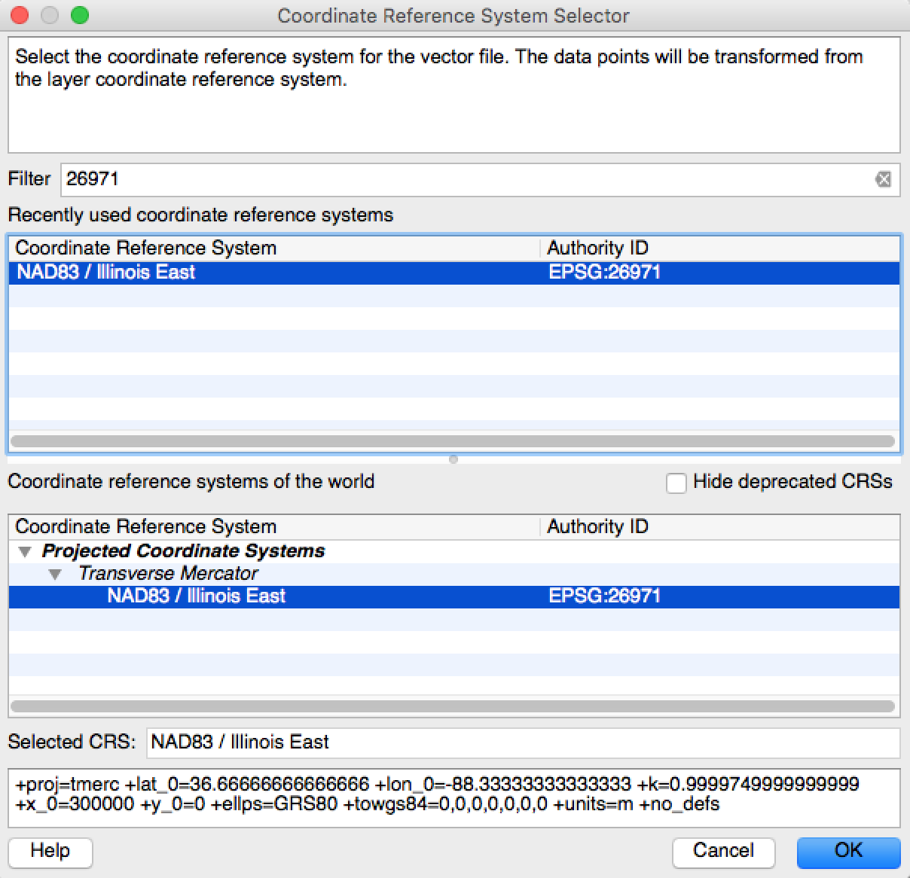
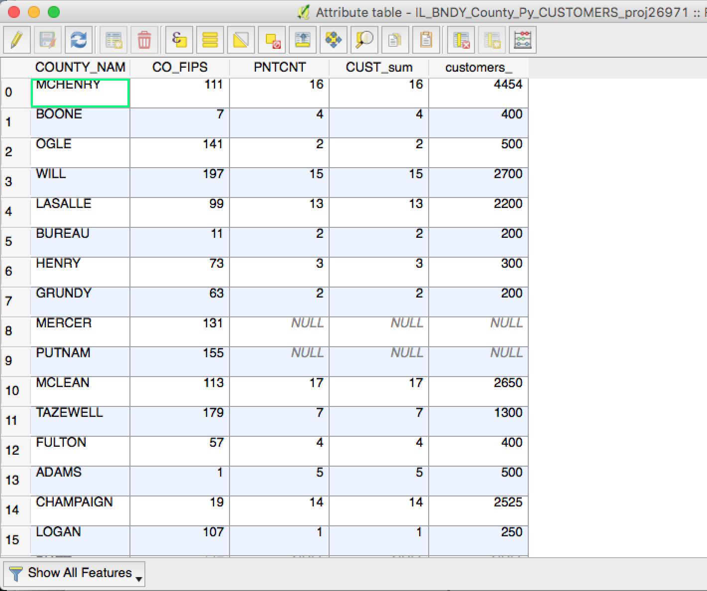
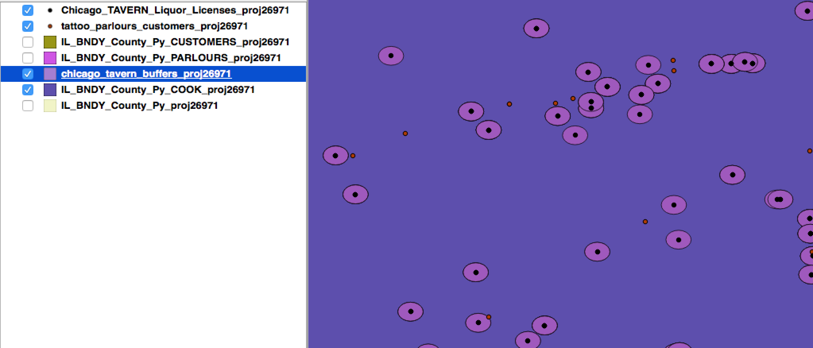
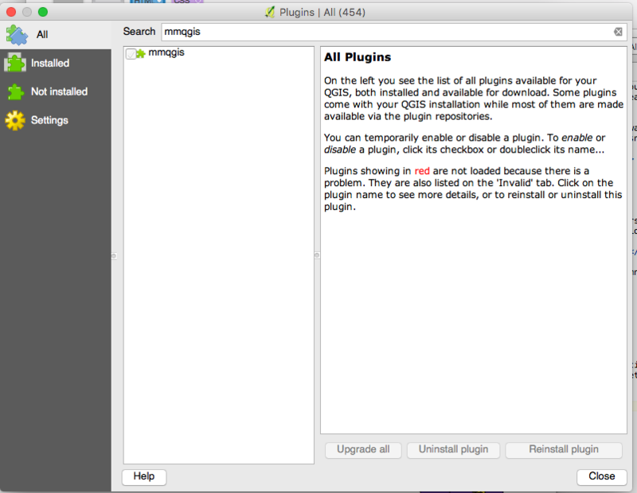
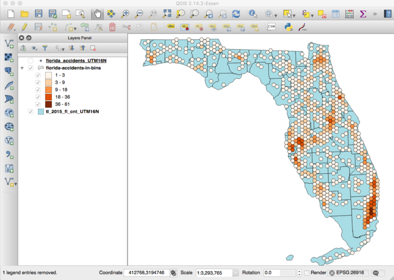
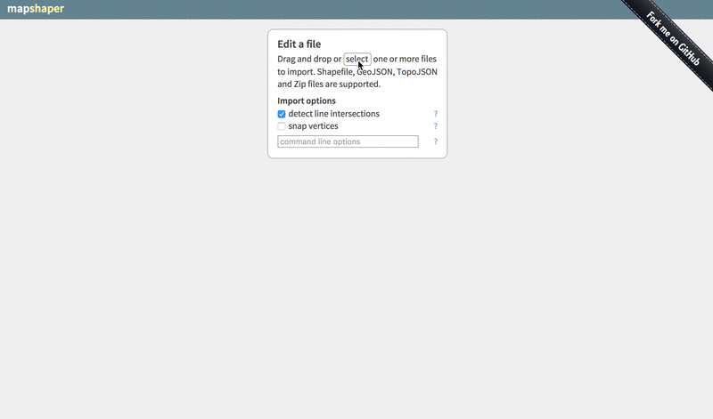

Class outline
Projections
Projections are how we use two-dimensional space to talk about three-dimensional space. Polygons like county and state borders are three-dimensional, but we do our best to show them in two dimensions in print and online.
But this is all very complicated and not within the bounds of what we're covering today. Today, we'll just go over the practical side of projecting. The stuff that'll help you stay sane as you work with data in QGIS.
On The Fly Projecting
On-the-fly projecting is QGIS's way of trying to make your life easier. It allows you to add shapefiles of different projects to the same map and they appear inline. HOWEVER, when you're trying to do proximity analyses, like calculating distance or area, you're gonna be in a world of pain if you rely on on-the-fly projecting.
So let's see how you project shapefiles correctly in QGIS.
Projecting layers
- Start a fresh map
- Add your Illinois County shapefile
IL_BNDY_County_Py - Right click the layer and select Save as...
- Format = ESRI Shapefile
- Save as =
IL_BNDY_County_Py_proj26971 - CRS = click

- Filter for
26971 - Select CRS
NAD83 / Illinois East - Click OK
- Filter for
- Add saved file to map = checked
- Click OK
You just projected that Illinois shapefile into a new projection!
Repeat the above steps for our tattoo parlour data tattoo_parlours_customers and our Chicago_TAVERN_Liquor_Licenses data. Change the filenames of course.
You'll see that when QGIS adds our new shapefiles to the map, it doesn't appear that anything has changed. But trust me, it has. You can't see it, but the way that these two shapefiles relate to each other is vastly different from what it was before we projected the two layers.
Here's a pretty good read on projections: what the differences are, common problems, how to work with them and more.
Aggregating point data
Counting the number of points in a given set of polygons is often useful. We will perform that analysis using Points in Polygon.
Parlours Per County Aggregation
Click Vector > Analysis Tools > Points in Polygon
- Input polygon vector layer =
IL_BNDY_County_Py_proj26971 - Input point vector layer =
tattoo_parlours_customers_proj26971 - We don't want to change Input point vector layer attributes to aggregate or Statistical method for attribute aggregation right now.
- Output count field name - the column name of the new column we'll be creating with this option. Default =
PNTCNT - Output Shapefile > Browse - this allows you to set the path and filename for the shapefile we're creating. Let's use
IL_BNDY_County_Py_PARLOURS_proj26971
Once you have all that set, click OK.
A new shapefile should have been added to our map. If we open up its attribute table we should see our new column PNTCNT at the end. The value in this column corresponds to the number of tattoo parlours in each county.
Customers Per County Aggregation
The above analysis is good if we want to total parlour count, but what if we want to visualize customers?
Let's go back into that Vector > Analysis Tools > Points in Polygon section.
- Input polygon vector layer =
IL_BNDY_County_Py_PARLOURS_proj26971 - Input point vector layer =
tattoo_parlours_customers_proj26971 - Input point vector layer attributes to aggregate = customers
- Statistical method for attribute aggregation = sum
- Output count field name - the column name of the new column we'll be creating with this option. Let's use
CUST_sum - Output Shapefile > Browse - this allows you to set the path and filename for the shapefile we're creating. Let's use
IL_BNDY_County_Py_CUSTOMERS_proj26971
Once you have all that set, click OK.
Open the newly added shapefile attribute table. You'll see we've now got an additional column CUST_sum. This column tells us how many customers are in the each county. 
Computing New Fields
At this point, we could export our data as a CSV, bring it into an editor like Excel, and calculate things like average number of customers per parlour in each county. But why go through all those steps. Let's do it all in QGIS!
Open the attribute table of the shapefile we created earlier - IL_BNDY_County_Py_CUSTOMERS_proj26971.
Click the Open Field Calculator button 
Create a new field that calculates the average number of customers per parlour:
- Create a new field - check this
- Output field name = avgCUST
- Output field type = Whole number (integer)
- Output field length = 10
- Precision = 0
- Expression =
"CUSTOMER_sum" / "PNTCNT"
Click OK.
When you open the attribute table on IL_BNDY_County_Py_CUSTOMERS_proj26971, you should your custom column: avgCUST
Filtering and saving new shapefiles
More often than not, you're going to get more data than you want to use.
Instead of making QGIS process large shapefile every time you make a change, you can filter out features you're not interested in.
Right now, we're going to focus in on Cook County, which is where Chicago is located.
Filtering
Right click the IL_BNDY_County_Py_proj26971 layer and select Open Attribute Table.
In the top menu bar of the attribute table pop up you should see an icon that looks like an E on top of a yellow square.  . Click that.
. Click that.
You should get another popup with some drop down options and a large textarea.
- Click on Fields and Values. What drops down is all the available fields on this shapefile.
- Double click CO_FIPS. You should see that field name surrounded by quotes appear in the textarea to the left.
- Then, type an equals (=) sign and number 31. The whole equation is
CO_FIPS = 31 - Click "Select".
Now we want to save this selection as its own shapefile, so right click the Illinois counties shapefile again and select "Save as...".
- Format - ESRI Shapefile
- Save as - Save your new shapefile in its own folder with a name that is both descriptive of where it came from and what it is now. I'm going to call mine
IL_BNDY_County_Py_COOK_proj26971. Naming is important. - CRS - Leave as is for now.
- Save only selected features - If we don't do this, we're just saving our original Illinois counties shapefile as a copy of itself.
- Add saved file to map
Now we have just the Cook County, Illinois as its own shapefile.
Buffers and Hexbins
Now we're going to have a little fun. Let's use our tattoo parlour data and our tavern data to see which tattoo parlours are within 500 feet of a bar.
This is obviously a silly application of this analysis. Here's a real one though.
NOTE:This analysis will not work if we don't use our PROJECTED shapefiles.
Buffers
Let's work on excluding all the tattoo parlours that are not within 1 mile of a bar.
Make sure you have your Cook County shapefile IL_BNDY_County_Py_COOK_proj26971, your tattoo parlours shapefile tattoo_parlours_customers_proj26971 and your Chicago taverns shapefile Chicago_TAVERN_Liquor_Licenses_proj26971.
NOTE: for this analysis to work, we've got to have all of our shapefiles in the same projection.
- Go to Vector > Geoprocessing > Buffer(s)
- Vector input layer:
Chicago_TAVERN_Liquor_Licenses_proj26971 - Buffer distance:
152(remember, all distances are going to be in the unit that the projection is in. If you projected your taverns appropriately, they should be in meters. 152 meters = 500 feet) - Output Shapefile > Browse
chicago_tavern_buffers_proj26971
You should see little halos appear around your taverns. Those are buffers!
Now we want to select only those tattoo parlours that fall within those 500 foot buffers.
- Go to Vector > Research Tools > Select by location
- Select features in:
tattoo_parlours_customers_proj26971 - That intersect features in:
chicago_tavern_buffers - Output Shapefile > Browse
chicago_tavern_buffers
Hexbins
Install MMQGIS Plugin. First, let's install a plugin that will help us create the hex bins: MMQGIS.
- Go to
Plugins > Manage and Install Plugins... - Search for mmqgis and install the plugin
- Once installed, you should see an additional top-level menu item: MMQGIS.
Create hex bins. Select MMQGIS > Create > Create Grid Layer.
- Shape Type = Hexagons
- Units = Layer Units
- X Spacing and Y Spacing - this tells QGIS how large to make our hex bins. For these calculations, we're 100% in debt to Michael Corey's 2015 QGIS presentation. We want hexagons with an area of 1 square mile. Our projections is in meters, so we'll need to convert that into meters. And then we'll need to use this calculator to figure out the short diagonal length of the hexagon.
1 sq. mile = 2,590,000 sq. meters - So, enter
1729for our Y Spacing. The X Spacing we can leave. It will follow the y. - Output Shapefile =
chicago-grid
Perform points in polygon. This time, we're going to use the grids shapefile as our Input polygon vector layer.
- Click
Vector > Analysis Tools > Points in Polygon - Input polygon vector layer =
chicago-grid - Input point vector layer = Florida accidents
- We don't want to change Input point vector layer attributes to aggregate or Statistical method for attribute aggregation right now.
- Output count field name - the column name of the new column we'll be creating with this option.
- Output Shapefile > Browse =
florida-accidents-in-bins.shp
Filter out bins without accidents.
- Right click
florida-accidents-in-bins.shp - Expression =
"PNTCNT" > 0 - Click OK
Color-code bins so we can see what's up!
Preparing data for online display
Saving geojson
For most interactive maps, you're going to want to save your map data as a geojson file. I usually display interactive mapping data in Leaflet.js.
- Right click the shapefile and select Save as...
- Format = GeoJSON
- Save as - you can save as the same filename, but it'll have the
geojsonfile extension if you set Format to GeoJSON. - CRS - the CRS is better set to something like
WGS 84. This has to do with the default projection of mapping programs like Leaflet.
Simplifying Geometries
Simplifying geometries is sometimes necessary when you're preparing your geographic data for display online. Overly-detailed data can cause programs like Leaflet.js to load suuuuuuuper slowly.
There are ways of doing this in QGIS, but honestly... using MapShaper is much easier and more efficient. MapShaper lets you see how your adjustments are going to affect the quality of you shapefile in realtime.
